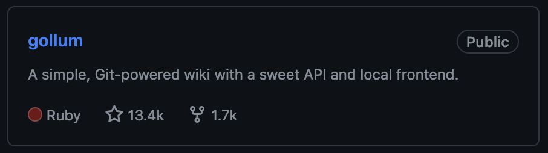

Introduction

Dawa Ometto (d.l.a.ometto1@uu.nl, @dometto)
UU ITS, Research Engineer
Making life difficult for myself with git since
2012:

“Borrowed” from:
git commitgit status, git addgit branch, git mergegit rebasegit refloggit cherry-pickgit add -pgit bisectgit cat-file, git ls-treeSimplest git workflow:
main)git commit -a.This can already be an improvement over not using versioning! But it doesn’t work for collaboration.
<feature> “branching off” from
main.<feature>.main, or open a Pull
Request.
How many changes should be contained in a commit?
Strive (!) to make your commits atomic:
The basic idea of an atomic git commit is that it contains the shortest amount of work that does what it is supposed to do. That is, less work would not be enough to do the task, and more work would be going out of scope. (@abelsiqueira)
@paulinevos:
If every commit is an atomic commit, then we have a beautiful git history. Every commit passes tests, so we can easily navigate around. Every commit has a non-creeping purpose, so we can cherry-pick them more easily. Every commit is self-contained, so we can revert them trivially. It is almost utopic, but it is actually attainable. (@abelsiqueira)
General idea: your commit history should tell an understandable story.
Atomic commits help you avoid this:

But creating atomic commits is hard.
We often don’t know what logical ‘chunks’ our work will end up dividing into, until we’ve done the work – and we do want to have versioning along the way!
Solution:
main yourself.
On GitHub:

These options correspond to CLI options:
git merge --no-ffgit merge --squashgit merge --ff-only (need to rebase first!)What is the difference, and which one should we use? * Spoiler: all three are legit.
Regardless of what merge strategy you choose, merge
conflicts may occur. That is, git may be unable to
resolve conflicts between:
<feature>
branch.main branch, after
<feature> branched off from main.# How to create a merge conflict
<<<<<<< HEAD
First you add a file, but create a conflicting change
on another branch.
=======
First you add a file.
Then you add something on another branch and commit it.
>>>>>>> new_branchgit is clever enough to ‘auto-merge’ clearly unrelated
changes. But if auto-merging fails, you will need to resolve the
conflict manually:
git add <filename>).git to continue with your merge or
rebase.See exercises!
Every commit is uniquely defined by its:
$ git cat-file commit HEAD
tree 7bbb09e5f1ab20c91e0e57be4ec99c49ba482bac
parent 7656a5f45d263eb0d4a09788dc83aae8106970b4
author Dawa Ometto <d.l.a.ometto1@uu.nl> 1704892164 +0100
committer Dawa Ometto <d.l.a.ometto1@uu.nl> 1704892195 +0100
Use more chiliSo:
A merge commit is a commit that has multiple parents:
tree 10f6a7c3758039f5d24fac9556646c830655fb14
parent 7656a5f45d263eb0d4a09788dc83aae8106970b4
parent a831dcd01638aebb453fb218bbb8eeebc2e2cf69
author Dawa Ometto <d.l.a.ometto1@uu.nl> 1704899151 +0100
committer Dawa Ometto <d.l.a.ometto1@uu.nl> 1704899151 +0100
Merge branch 'noconflict'It forms a ‘link’ between two different histories.
Having a merge commit makes the history of a branch non-linear:

Unlike merge commits, our other two merge strategies yield linear histories.
Rebase-and-merge:

If there have been no new commits to main since
<feature> was created, this is easy:
git simply records that the branch main
points to the latest commit in <feature>.testrepo git:(main) $ cat .git/refs/heads/main
bfe91cdde970ecdffaac357f6253aec288c92396
testrepo git:(main) $ git merge --ff-only feature_branch
Updating bfe91cd..8bbdd62
Fast-forward
ingredients.txt | 1 +
testrepo git:(main) $ cat .git/refs/heads/main
8bbdd629aa39af3da8916275ea8be39c412c91a4
testrepo git:(main) $ git cat-file commit 8bbdd629aa39af3da8916275ea8be39c412c91a4
tree 23c56b3e5170e3cb63c037986199320ea2d7d260
parent bfe91cdde970ecdffaac357f6253aec288c92396
author Dawa Ometto <d.l.a.ometto1@uu.nl> 1704907022 +0100
committer Dawa Ometto <d.l.a.ometto1@uu.nl> 1704907022 +0100
This is the commit message of the commit that will be the new HEAD!But what if main and <feature> have
divergent histories?
main and the
start of <feature> :-(git rebase main replays the changes in your
current branch on top of the last commit in
main.
Goal: get a history that can be merged with a “fast-forward” again!

git applies the
changes in that commit on top of the latest commit in
main.
Squash-and-merge accomplishes essentially the same thing as
rebase-and-merge, but compresses all the changes on
<feature> into a single commit.
Advantage: you’ll only have to handle merge conflicts once. Disadvantage (?): we lose the history of the feature branch.
If we’re aiming at having only atomic commits in
main, which merge strategy is appropriate?
Bottom line:
rebase…rebase anyway :-)Some tools:
git commit --amend to change the contents of the
last commit.git rebase -igit stash).See exercises!